CULTURA · PALOTINA
Curso Biscuit
Conteúdo e registros do Curso Biscuit em Palotina.
Galeria de fotos
37 registros · Selecione uma foto para ampliar.
Fotos


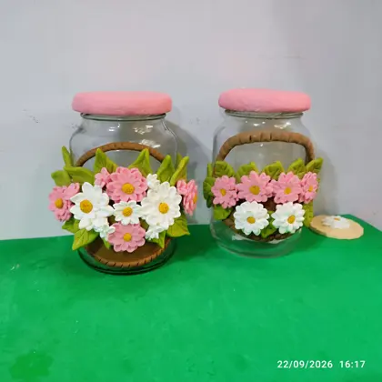

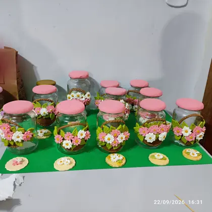

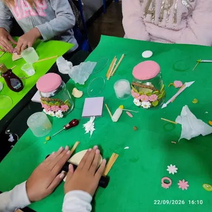

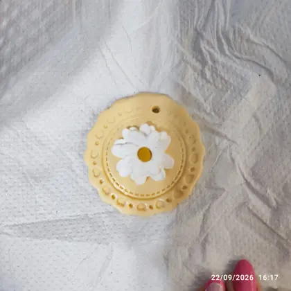

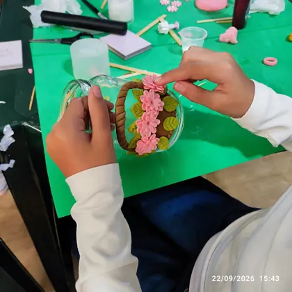

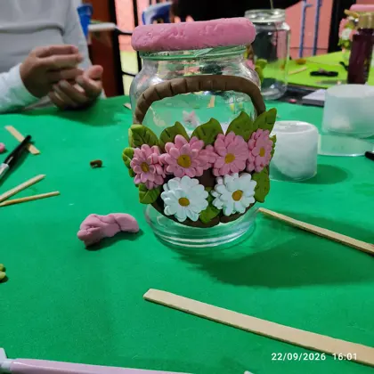

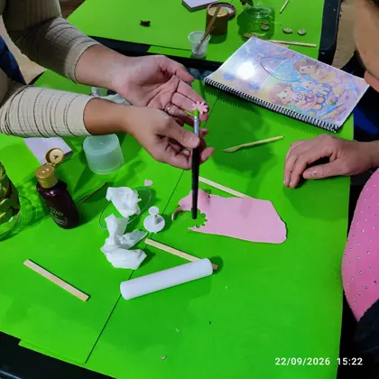

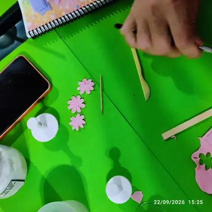

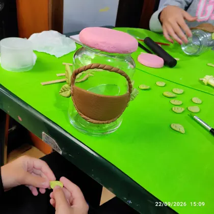

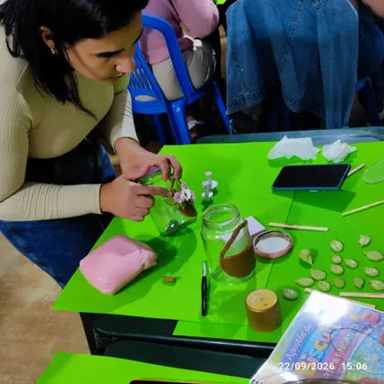

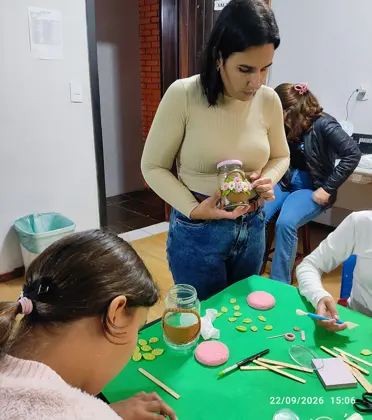

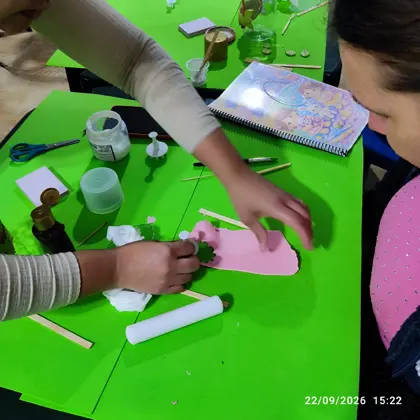

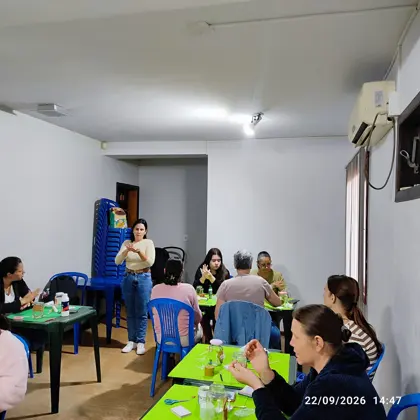

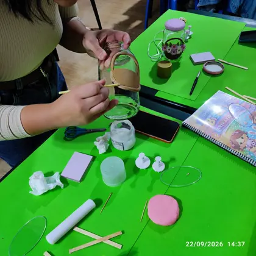

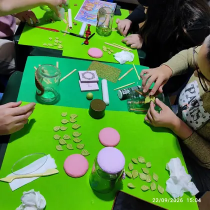

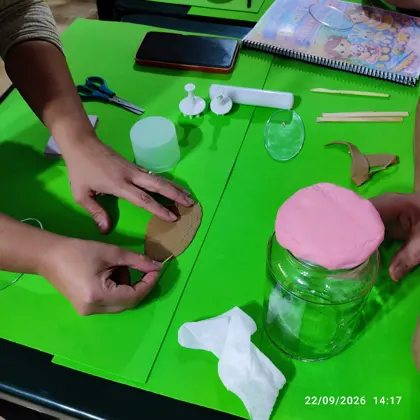

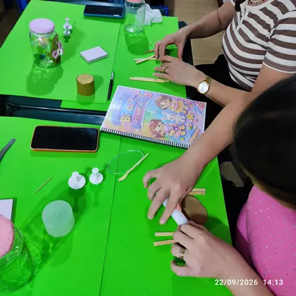

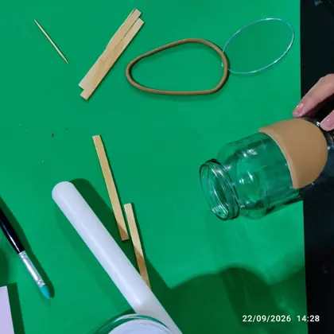

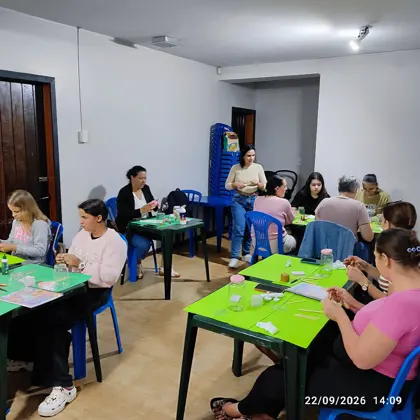

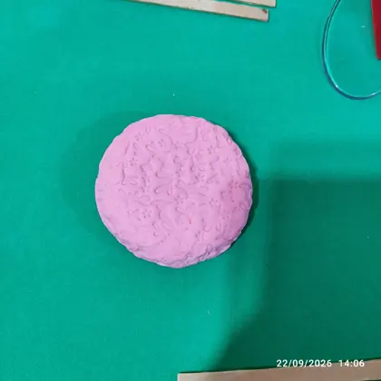

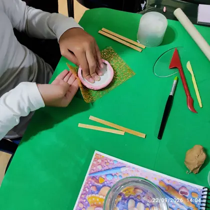

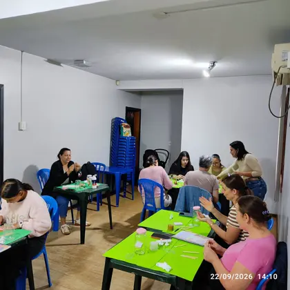

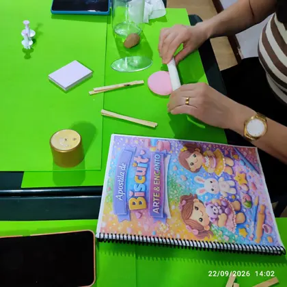

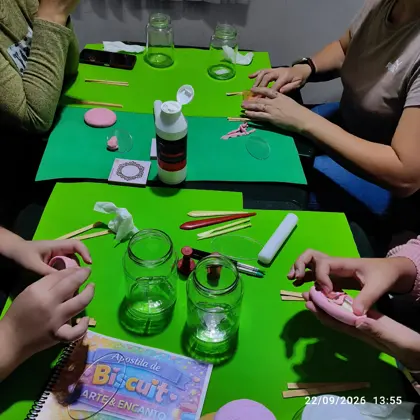

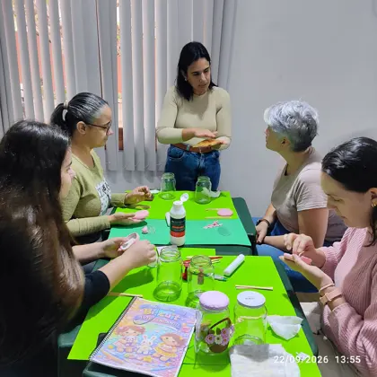

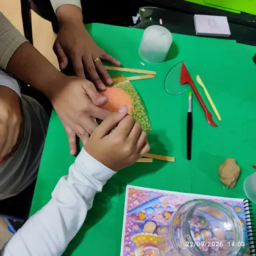

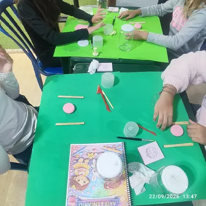

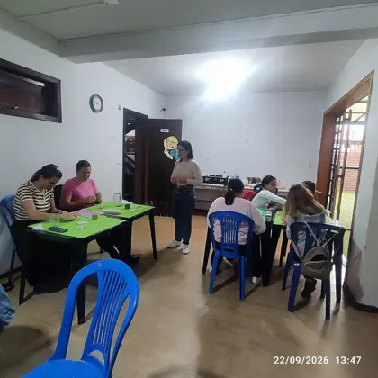

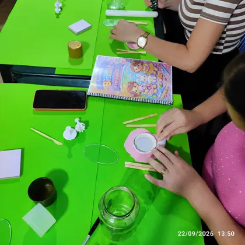

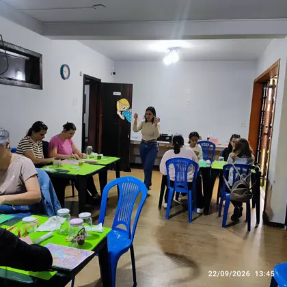

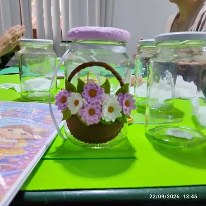

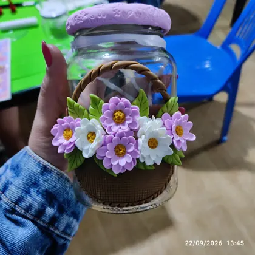

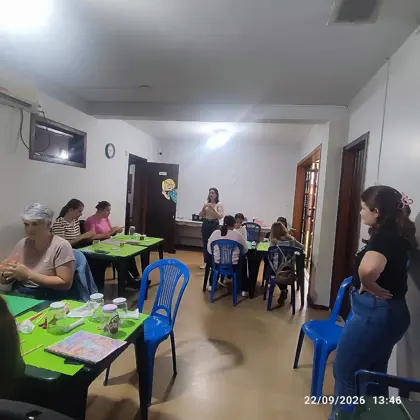

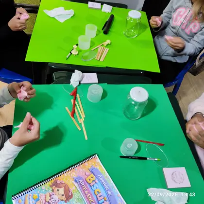

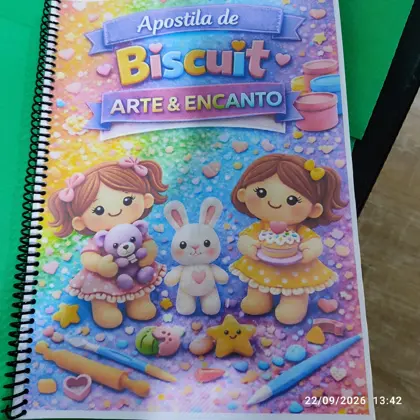

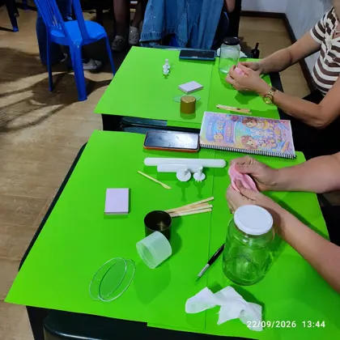
A programação e os detalhes das próximas edições serão publicados aqui quando confirmados.
← Voltar ao portal da Cultura